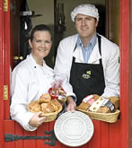
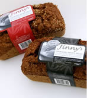
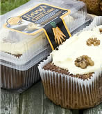
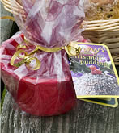

Home
"Winners of 2 Gold Gtars in the 2008 Great Taste Awards for their Yeast Free Brown Breads."
"Best in Ireland 2007 & 2008 - Bridgestone Award"
Bread is a large part of our diet. Whether it is toast for breakfast or a sandwich for lunch, most of us eat at least a few slices every day so why not make it a most pleasurable experience.
Jinny's Bakery, located in Leitrim, the North West of Ireland, prepare and bake all the bread early in the morning to ensure it's fresh when it's delivered to the shops. Our bread is yeast free and sugar free making it a healthy choice for you and your family.
Along with the bread we make a range of cakes including scones, carrot cakes and Christmas puddings.
   